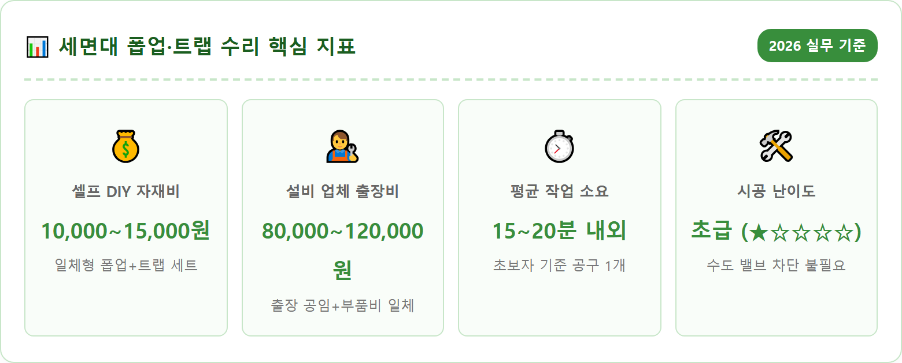
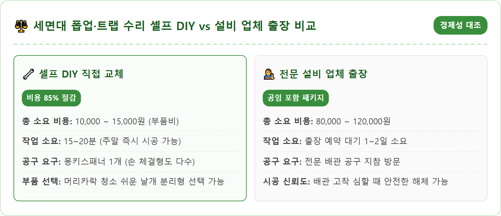
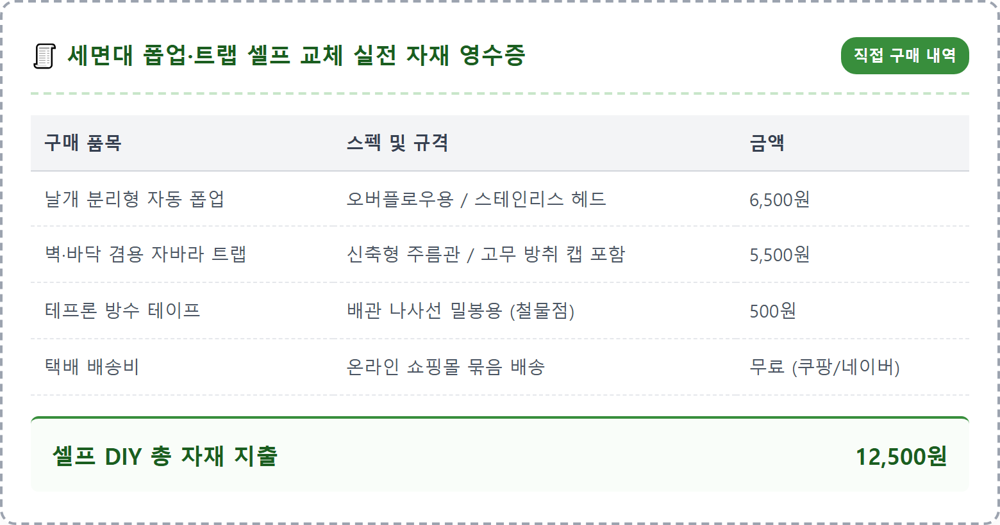
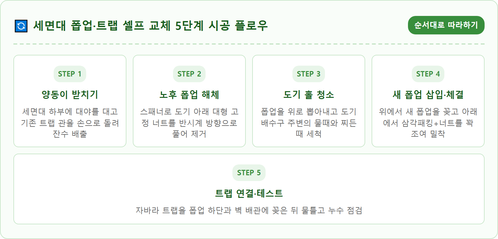
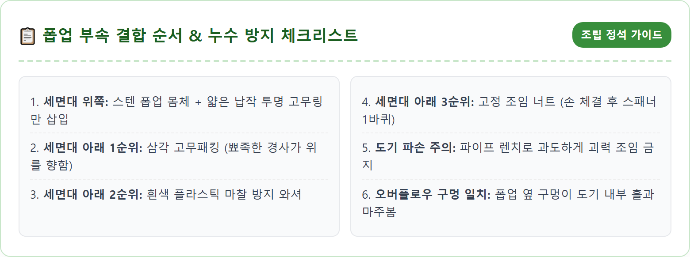
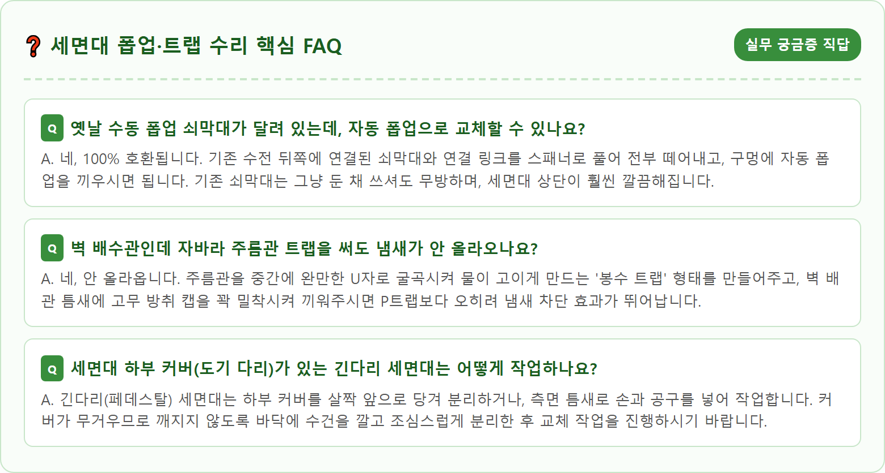

A realistic, close-up step-by-step DIY home plumbing repair scene under a modern ceramic bathroom washbasin. An organized homeowner wearing yellow protective rubber gloves carefully installs a shiny, brand-new stainless steel pop-up drain stopper and flexible chrome drainage trap pipe using an adjustable wrench. Clean, bright bathroom lighting illuminates the white tile floor and chrome pipe fixtures. A small plastic bucket, clean dry towel, and a spool of white Teflon plumbing tape sit neatly beside the work area. Crisp focus, ultra-detailed photorealistic documentary style, 8k resolution, 1:1 aspect ratio.

욕실 세면대를 사용하다가 어느 날 갑자기 물마개(폽업)를 눌렀는데 도로 튀어 올라오지 않고 꽉 낀 채 박혀버리거나, 세면대 밑을 내려다보았을 때 은색 배수 파이프 연결부에서 물방울이 뚝뚝 떨어져 바닥이 흥건해진 경험은 누구나 한 번쯤 겪게 되는 흔한 일상 트러블입니다.
이러한 세면대 배수계통 고장의 주요 원인은 크게 세 가지로 요약됩니다. 첫째는 폽업 내부 스프링의 부식입니다. 오랜 기간 비눗물과 머리카락, 치약 찌꺼기가 엉겨 붙으면서 금속 스프링의 탄성이 죽어 마개가 제 기능을 상실하는 것입니다. 둘째는 하부 배수관(트랩) 연결부의 고무 삼각 패킹 경화입니다. 5년 이상 경과하면 고무가 굳고 삭아서 틈새가 발생해 미세한 틈으로 물이 새어 나옵니다.
셋째는 과거 아파트에 시공된 구형 '수동 폽업(수전 뒤쪽 쇠막대를 위아래로 당겨 조작하는 쇠줄 연결형)'의 유격 틀어짐과 관내 이물질 부패입니다. 이 경우 세면대뿐만 아니라 하수구 배관을 타고 올라오는 퀴퀴한 하수구 악취의 주범이 됩니다. 이러한 문제는 부분 땜질보다 최신 '분리형 자동 폽업'과 '원터치 자바라 트랩'으로 통째 교체하는 것이 가장 확실하고 근본적인 해결책입니다.
세면대 폽업이나 트랩에 문제가 생겼을 때 동네 인테리어 가게나 배관 설비 기사를 부르면 얼마의 비용이 들까요? 통상 기사 출장 기본료 4만~5만 원에 부품 교체비와 인건비 4만~7만 원이 더해져 최소 8만 원에서 많게는 12만 원 안팎의 견적이 청구됩니다.
하지만 쿠팡이나 네이버쇼핑, 다이소, 인근 철물점에서 호환 규격의 일체형 부속 세트를 직접 구매하면 자재비 1만 원에서 1만 5천 원 안팎으로 완벽하게 해결할 수 있습니다. 즉, 몽키스패너 하나로 15분만 투자하면 약 7만~10만 원의 아까운 생활비를 즉시 절약할 수 있는 셈입니다.
과거 구형 배관은 전용 첼라 공구와 테프론 테이프 실링이 복잡했지만, 최근 출시되는 DIY용 세면대 배수 부속들은 손으로만 돌려도 방수가 완벽하게 체결되는 실리콘 일체형 패킹 구조로 설계되어 있어 초보자나 여성 1인 가구도 공구 부담 없이 손쉽게 교체할 수 있습니다.

성공적인 셀프 교체를 위해 부품을 구입하기 전 반드시 확인해야 할 규격이 있습니다. 먼저 폽업은 '오버플로우(세면대 위쪽 넘침 방지 구멍)' 유무를 확인해야 합니다. 일반 가정용 세면대는 물이 넘치지 않도록 상단에 작은 물 빠짐 구멍이 뚫려 있는 '오버플로우 유(有)' 제품을 선택해야 물이 원활하게 배수됩니다 (유리볼이나 탑볼형 세면대만 '무(無)' 제품 선택).
둘째로 마개 방식은 손가락으로 누르면 딸깍 닫히고 다시 누르면 열리는 '자동 원터치 폽업(푸시 팝업)'을 고르되, 반드시 마개 뚜껑을 손으로 쏙 뽑아 올릴 수 있는 '날개 분리형(안티헤어 트랩형)'을 선택하세요. 마개 아래에 플라스틱 거름망이 달려 있어 머리카락이 배관으로 넘어가지 않고 걸러지며, 이물질이 차면 손으로 쏙 뽑아 물로 헹궈내기만 하면 청소가 끝납니다.
셋째로 하부 트랩은 배수구가 어디에 뚫려 있는지를 확인합니다. 벽 속으로 배수관이 들어가는 구조라면 'P트랩', 바닥 타일 구멍으로 배수관이 내려가는 구조라면 'S트랩'이나 자유자재로 휘어지는 '자바라 I트랩'을 선택합니다. 요즘은 주름관 형태로 벽과 바닥 배수구 어디든 호환되는 '멀티 자바라 일체형 트랩'이 출시되어 있어 규격 고민 없이 설치할 수 있습니다.

세면대 폽업 교체는 수도꼭지(수전) 교체와 달리 수도 계량기나 앵글밸브를 잠글 필요가 전혀 없습니다. 맑은 물이 나오는 급수관이 아니라 사용한 물이 흘러내려 가는 배수관 작업이기 때문입니다. 따라서 작업 중 집안 전체 물을 끊을 필요가 없어 언제든 편안한 시간에 시작할 수 있습니다.
필요한 준비물은 아주 단출합니다.
1. 몽키스패너 (또는 워터펌프 플라이어 첼라): 기존에 단단히 조여진 너트를 풀기 위한 공구 1개
2. 물받이용 양동이 (바가지 또는 대야): 기존 트랩을 풀 때 고여 있던 잔수가 쏟아져 나오므로 세면대 바로 밑에 받쳐둘 용기
3. 고무장갑 및 헌 수건: 손 보호와 미끄럼 방지, 바닥 물기 닦기용
4. 다목적 세제 및 칫솔: 폽업을 분해한 뒤 세면대 도기 홀 주변에 찌든 때를 닦아낼 청소 도구
새로 구입한 최신 일체형 자동 폽업은 체결 너트가 커다란 플라스틱 삼각형 날개 구조로 되어 있어 손아귀 힘만으로도 꽉 조여지므로, 조립 시에는 스패너조차 쓸 필요가 없는 경우가 대부분입니다.

본격적인 작업의 첫 단계는 낡은 부속을 해체하는 일입니다. 세면대 밑에 양동이를 바짝 받친 후, 하부 트랩(자바라 또는 금속 파이프)의 조임 너트를 시계 반대 방향으로 돌려 풀어냅니다. 트랩의 굴곡진 부위에 고여 있던 고약한 냄새의 잔수가 쏟아져 나오므로 양동이에 온전히 받아냅니다.
다음으로 세면대 도기 바로 아래에 바짝 붙어 있는 대형 금속(또는 플라스틱) 폽업 고정 너트를 풀어야 합니다. 몽키스패너를 너트에 물리고 반시계 방향으로 힘을 주어 돌립니다. 만약 10년 이상 지나 석회와 녹으로 너트가 쩔어붙어 꿈쩍도 하지 않는다면, 방청윤활제(WD-40)를 너트 나사선 틈새에 듬뿍 뿌려두고 5~10분간 기다린 뒤 마른걸레로 감싸고 스패너 손잡이를 톡톡 쳐주면 수월하게 풀려나옵니다.
너트와 고무패킹을 아래로 완전히 빼낸 후, 세면대 위쪽에서 낡은 폽업 몸체를 쏙 잡아당기면 쑥 빠져나옵니다. 이때 세면대 도기 구멍 안쪽에 시커멓게 눌어붙어 있는 곰팡이와 비누 찌꺼기를 헌 칫솔과 주방세제로 깨끗이 닦아내세요. 이 도기 접촉면이 매끈하고 깨끗해야 새 고무패킹이 빈틈없이 밀착되어 누수를 원천 방지할 수 있습니다.
이제 새 자동 폽업을 조립할 차례입니다. 셀프 시공 초보자가 가장 흔히 저지르는 실수는 '고무패킹의 조립 순서와 방향'을 거꾸로 끼워 물이 줄줄 새게 만드는 것입니다. 이 순서만 정확히 지키면 누수 확률은 0%가 됩니다.
새 폽업 포장을 뜯으면 [상단 스텐 몸체 + 상단 납작 고무링]이 한 세트이고, 아래에 조립되는 부속은 [삼각 단면 고무패킹 + 플라스틱 와셔 + 조임 너트] 순서로 되어 있습니다. 먼저 상단 납작 고무링이 끼워진 스텐 몸체를 세면대 위에서 아래 구멍으로 쏙 집어넣습니다 (도기 위쪽에는 절대 다른 부속을 끼우지 않습니다).
이제 세면대 밑으로 허리를 숙여, 삐져나온 폽업 파이프에 삼각 고무패킹의 뾰족한 쪽(경사면)이 위쪽(세면대 도기 구멍 쪽)을 향하도록 끼워 넣습니다. 그 아래에 미끄럼 방지용 플라스틱 와셔를 덧대고, 조임 너트를 돌려 올립니다. 처음에는 손으로 끝까지 돌린 후, 마지막에 몽키스패너로 1~2바퀴만 묵직하게 더 조여줍니다. 너무 과도한 괴력으로 조이면 도기가 깨질 수 있으므로, 고무패킹이 도기 구멍 틈새로 살짝 찌그러지며 압착되는 느낌이 들 때 멈추는 것이 기술입니다.

폽업 몸체가 단단히 고정되었다면 이제 하부 배수 트랩을 연결합니다. 주름관 자바라 트랩 상단 소켓을 폽업 하단 나사부에 꽂고 손으로 돌려 조여줍니다. 최근 트랩은 손잡이형 캡으로 되어 있어 맨손으로 꽉 조이기만 해도 내부 실리콘 링이 완벽하게 밀폐됩니다.
다음으로 자바라 주름관의 반대편 끝단을 벽면(또는 바닥)의 하수구 PVC 배관 구멍에 밀어 넣습니다. 이때 반드시 함께 동봉된 고무 방취 캡(원뿔형 고무마개)을 주름관 끝에 먼저 끼운 상태에서 하수구 구멍에 틈새 없이 꽉 눌러 박아 넣어야 합니다. 이 방취 캡이 하수관과 주름관 사이의 틈새를 완전히 막아주어야 바퀴벌레나 나방파리 등 벌레의 유입과 고약한 하수구 냄새를 100% 차단할 수 있습니다.
자바라 주름관을 배관에 꽂을 때는 일직선으로 팽팽하게 꽂지 말고, 중간 부위를 완만한 'U자' 또는 'S자' 형태로 살짝 구부려 늘어뜨려 주는 것이 노하우입니다. 이렇게 U자 굴곡을 만들어주면 그 곡선 부위에 소량의 물이 항상 고여 있는 '봉수(封水)' 역할을 하여, 배관을 타고 역류하는 악취가 물리적으로 실내로 올라오지 못하게 차단됩니다.
모든 부속 연결이 끝났다면 이제 가장 중요한 '최종 통수 및 누수 점검'을 진행합니다. 세면대 마개를 딸깍 눌러 닫은 뒤, 수도꼭지를 틀어 세면대에 물을 80% 이상 가득 채웁니다. 물을 채우는 동안 세면대 하부를 올려다보며 도기 밑 폽업 체결 너트 주변에서 물방울이 맺히지 않는지 확인합니다.
세면대에 물이 가득 차면 마개를 딸깍 눌러 열고 일시에 많은 양의 물을 방류합니다. 수압이 걸리며 물이 회오리를 치며 내려갈 때, 세면대 밑에 마른 휴지나 키친타월을 들고 ①도기 하부 너트 체결부, ②폽업과 트랩 연결 너트, ③자바라 트랩 굴곡부를 꼼꼼히 훑어봅니다.
키친타월에 물기가 전혀 묻어나지 않고 보송보송하다면 완벽한 성공입니다. 만약 나사선 틈새로 미세하게 물방울이 한 방울씩 맺힌다면, 너트를 반 바퀴 정도 더 조여주거나, 나사선을 잠시 풀어 테프론 테이프를 시계 방향으로 5~6바퀴 감은 뒤 다시 체결해주면 미세 누수가 깔끔하게 잡힙니다. 바닥에 양동이를 치우고 마른 걸레로 주변을 정리하면 15분 만의 세면대 수리가 완결됩니다.
새로 교체한 날개 분리형 자동 폽업은 관리가 너무나도 간편하여 욕실 청소의 스트레스를 혁신적으로 줄여줍니다. 과거 수동 폽업은 세면대 물이 잘 안 내려갈 때마다 세탁소 옷걸이를 쑤셔 넣거나 독한 화학 배수구 펑 세제를 들이부어야 했지만, 이제는 그럴 필요가 없습니다.
세면대 물 빠짐이 조금 더뎌졌다 싶으면, 물마개 뚜껑을 손으로 잡고 위로 쏙 잡아당기면 마개에 딸린 플라스틱 날개 거름망이 쑥 뽑혀 올라옵니다. 세면대를 쓰면서 흘러들어간 머리카락과 젤 형태의 비누 찌꺼기가 이 거름망 날개에 고스란히 엉겨 붙어 있는 것을 볼 수 있습니다.
휴지로 머리카락을 쓱 훔쳐 쓰레기통에 버리고, 샤워기 물로 거름망을 헹군 뒤 다시 구멍에 톡 꽂아 넣기만 하면 청소가 10초 만에 끝납니다. 한 달에 한 번씩 마개를 뽑아낸 구멍 속으로 과탄산소다 한 스푼을 넣고 뜨거운 물을 천천히 부어주면, 배관 내부 벽면에 낀 미세 곰팡이와 물때까지 말끔하게 살균 소독되어 1년 365일 악취 없는 쾌적한 세면대를 유지할 수 있습니다.

| 구분 | 세부 내용 | 비고 및 팁 |
|---|---|---|
| 추천 부품 | 날개 분리형 자동 폽업 + 자바라 겸용 트랩 | 오버플로우 유(有) 규격 선택 |
| 자재 비용 | 세트 기준 약 10,000 ~ 15,000원 | 설비 출장비(8~12만 원) 대비 85% 절감 |
| 필요 공구 | 몽키스패너 1개, 대야(물받이), 고무장갑 | 수도 계량기 차단 불필요 |
| 작업 시간 | 초보자 기준 약 15~20분 소요 | 너트 해체 5분 + 조립 10분 |
| 핵심 주의점 | 삼각 고무패킹 경사면이 위쪽을 향하도록 조립 | 자바라 주름관 U자 굴곡으로 악취 차단 |